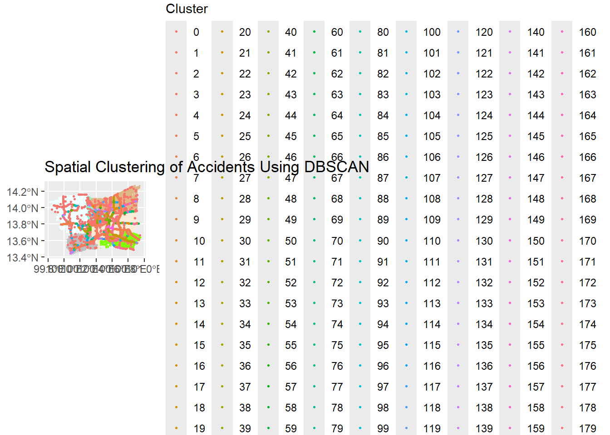
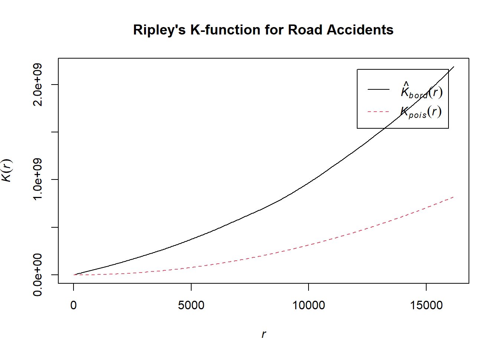
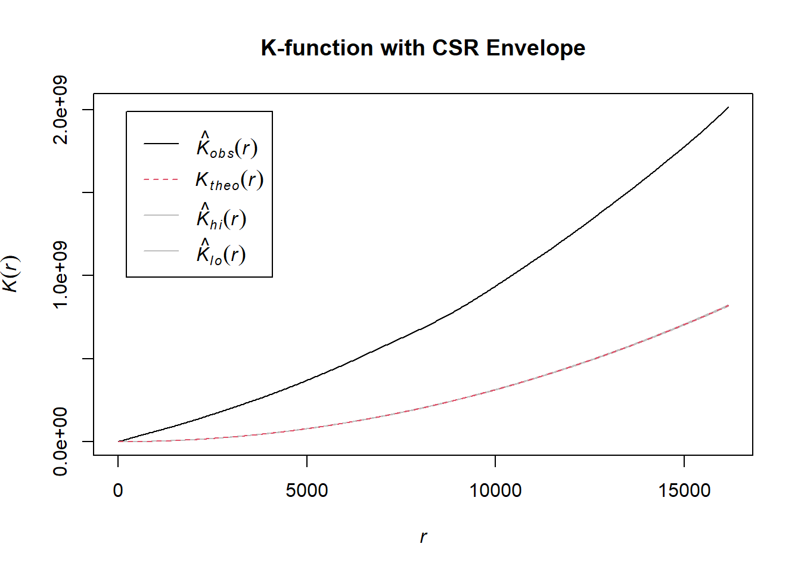

pacman::p_load(sf, tidyverse, tmap, spNetwork, spatstat,ggplot2, leaflet, dplyr, lubridate, dbscan, igraph)Take-Home_Exercise 1
#! eval:false
acc <- read_csv("data/rawdata/thai_road_accident_2019_2022.csv") %>%
mutate(Month_num = month(incident_datetime)) %>%
mutate(Month_fac = month(incident_datetime,
label = TRUE,
abbr = TRUE)) %>%
mutate(dayofweek = weekdays(incident_datetime))%>%
filter(!is.na(longitude) & !is.na(latitude)) %>% # Remove rows with missing coordinates
st_as_sf(coords = c("longitude", "latitude"),
crs=4326) %>%
st_transform(crs = 32647)BMR_acc <- acc %>%
filter(province_en %in% c("Bangkok", "Nonthaburi", "Nakhon Pathom",
"Pathum Thani", "Samut Prakan", "Samut Sakhon"))write_rds(BMR_acc, "data/rds/BMR_acc_data.rds")BMR_acc_data <- read_rds("data/rds/BMR_acc_data.rds")thai_one_map <- st_read(dsn = "data/rawdata",
layer = "hotosm_tha_roads_lines_shp")Reading layer `hotosm_tha_roads_lines_shp' from data source
`D:\SMUJunJie\ISSS626-GAA\Take-Home_Ex\Take-Home_Ex01\data\rawdata'
using driver `ESRI Shapefile'
Simple feature collection with 2792590 features and 14 fields
Geometry type: MULTILINESTRING
Dimension: XY
Bounding box: xmin: 97.34457 ymin: 5.643645 xmax: 105.6528 ymax: 20.47168
CRS: NAadmin_boundaries <- st_read(dsn = "data/rawdata",
layer = "tha_admbnda_adm1_rtsd_20220121")Reading layer `tha_admbnda_adm1_rtsd_20220121' from data source
`D:\SMUJunJie\ISSS626-GAA\Take-Home_Ex\Take-Home_Ex01\data\rawdata'
using driver `ESRI Shapefile'
Simple feature collection with 77 features and 16 fields
Geometry type: MULTIPOLYGON
Dimension: XY
Bounding box: xmin: 97.34336 ymin: 5.613038 xmax: 105.637 ymax: 20.46507
Geodetic CRS: WGS 84bangkok_boundary <- admin_boundaries %>%
filter(ADM1_EN == "Bangkok")
Nonthaburi_boundary <- admin_boundaries %>%
filter(ADM1_EN == "Nonthaburi")
Nakhon_Pathom_boundary <- admin_boundaries %>%
filter(ADM1_EN == "Nakhon Pathom")
Pathum_Thani_boundary <- admin_boundaries %>%
filter(ADM1_EN == "Pathum Thani")
Samut_Prakan_boundary <- admin_boundaries %>%
filter(ADM1_EN == "Samut Prakan")
Samut_Sakhon_boundary <- admin_boundaries %>%
filter(ADM1_EN == "Samut Sakhon")st_crs(thai_one_map) <- 4326BMR_acc <- acc %>%
filter(province_en %in% c("Bangkok", "Nonthaburi", "Nakhon Pathom",
"Pathum Thani", "Samut Prakan", "Samut Sakhon"))
Bangkok_roads <- st_intersection(thai_one_map, bangkok_boundary)
Nonthaburi_roads <- st_intersection(thai_one_map, Nonthaburi_boundary)
Nakhon_Pathom_roads <- st_intersection(thai_one_map, Nakhon_Pathom_boundary)
Pathum_Thani_roads <- st_intersection(thai_one_map, Pathum_Thani_boundary)
Samut_Prakan_roads <- st_intersection(thai_one_map, Samut_Prakan_boundary)
Samut_Sakhon_roads <- st_intersection(thai_one_map, Samut_Sakhon_boundary)Bangkok_roads <- st_intersection(thai_one_map, bangkok_boundary)acc_data <- BMR_acc_data %>%
mutate(
incident_date = as.Date(incident_datetime),
year = year(incident_datetime),
month = month(incident_datetime, label = TRUE),
day_of_week = wday(incident_datetime, label = TRUE)
)# Plot number of accidents by year and month
ggplot(acc_data, aes(x = incident_date)) +
geom_histogram(binwidth = 30, fill = "blue", color = "white") +
labs(title = "Number of Accidents Over Time", x = "Date", y = "Number of Accidents")
# Plot the spatial distribution of accidents on the road network
ggplot() +
geom_sf(data = Bangkok_roads, color = "antiquewhite") +
geom_sf(data = Nonthaburi_roads, color ="aquamarine") +
geom_sf(data = Nakhon_Pathom_roads, color = "azure") +
geom_sf(data = Pathum_Thani_roads, color = "burlywood") +
geom_sf(data = Samut_Prakan_roads, color = "chartreuse") +
geom_sf(data = Samut_Sakhon_roads, color = "gray") +
geom_sf(data = BMR_acc_data, aes(geometry = geometry), color = "red", size = 0.5) +
labs(title = "Spatial Distribution of Road Accidents in BMR")
# Step 1: Extract hour of the day and day of the week for accidents
acc_data <- acc_data %>%
mutate(hour_of_day = hour(incident_datetime),
day_of_week = wday(incident_datetime, label = TRUE))
# Step 2: Summarize the data by hour of day and day of week
summary_data <- acc_data %>%
group_by(hour_of_day, day_of_week) %>%
summarise(count = n()) # Count the number of accidents for each combination
# Step 3: Create a heatmap of accidents by hour and day of week
ggplot(summary_data, aes(x = hour_of_day, y = day_of_week, fill = count)) +
geom_tile(color = "white") +
scale_fill_gradient(low = "white", high = "red") +
labs(title = "Heatmap of Accidents by Hour of Day and Day of Week",
x = "Hour of Day", y = "Day of Week") +
theme_minimal()
acc_data <- BMR_acc_data %>%
mutate(month = month(incident_datetime)) # Extract month from incident datetimeacc_data <- acc_data %>%
mutate(
year = year(incident_datetime), # Extract year
month = month(incident_datetime) # Extract month
)
monthly_accidents <- acc_data %>%
group_by(year, month) %>%
summarise(count = n())
# Plot time series of accidents
ggplot(monthly_accidents, aes(x = interaction(year, month, sep = "-"), y = count, group = 1)) +
geom_line(color = "blue") +
geom_point() +
labs(title = "Monthly Accident Counts Over Time", x = "Year-Month", y = "Number of Accidents") +
theme(axis.text.x = element_text(angle = 90, hjust = 1))
# Use spatial coordinates for clustering
coords <- st_coordinates(acc_data$geometry)
# Perform DBSCAN clustering
dbscan_result <- dbscan(coords, eps = 500, minPts = 5) # eps defines the neighborhood size in meters
# Add clustering result back to the data
acc_data$cluster <- dbscan_result$cluster
# Visualize clusters
ggplot() +
geom_sf(data = Bangkok_roads, color = "antiquewhite") +
geom_sf(data = Nonthaburi_roads, color ="aquamarine") +
geom_sf(data = Nakhon_Pathom_roads, color = "azure") +
geom_sf(data = Pathum_Thani_roads, color = "burlywood") +
geom_sf(data = Samut_Prakan_roads, color = "chartreuse") +
geom_sf(data = Samut_Sakhon_roads, color = "gray") +
geom_sf(data = acc_data, aes(geometry = geometry, color = factor(cluster)), size = 0.5) +
labs(title = "Spatial Clustering of Accidents Using DBSCAN", color = "Cluster")
# Create a time series object for accident counts
ts_data <- ts(monthly_accidents$count, start = c(min(monthly_accidents$year), min(as.numeric(monthly_accidents$month))), frequency = 12)
# Perform seasonal decomposition
decomp <- stl(ts_data, s.window = "periodic")
# Plot the decomposition
plot(decomp, main = "Seasonal Decomposition of Monthly Accident Counts")
# Remove duplicated coordinates
unique_coords <- unique(coords)kde_for_month <- function(month_data) {
# Extract coordinates
coords <- st_coordinates(month_data$geometry)
# No need to remove duplicates, proceed with all coordinates
# Create a bounding box or window for the KDE
window <- as.owin(st_bbox(month_data))
# Convert to a point pattern for KDE
acc_ppp <- ppp(x = coords[,1], y = coords[,2], window = window)
# Perform Kernel Density Estimation with an optimal sigma value
acc_kde <- density(acc_ppp, sigma = 300) # Adjust sigma as needed
# Convert KDE result to data frame for ggplot
kde_raster <- as.data.frame(acc_kde)
return(kde_raster)
}
# Suppress warnings related to duplicate points
options(warn = -1)
# Calculate KDE for each month
kde_data <- BMR_acc_data %>%
group_by(Month_num) %>%
group_map(~ kde_for_month(.x), .keep = TRUE) # Apply KDE for each group (month)
# Combine all KDE data
kde_combined <- bind_rows(kde_data, .id = "month")ggplot(kde_combined, aes(x = x, y = y, fill = value)) +
geom_raster() +
scale_fill_viridis_c(option = "magma", direction = -1) + # Magma with reverse direction for contrast
labs(title = "KDE of Road Traffic Accidents by Month", fill = "Density") +
facet_wrap(~ month, ncol = 3) +
theme_minimal() +
theme(axis.text.x = element_blank(),
axis.text.y = element_blank(),
axis.ticks = element_blank(),
panel.grid = element_blank())
options(warn = -1)
# Extract the spatial coordinates from the geometry column
coords <- st_coordinates(acc_data$geometry)
# Create a window (bounding box) for your study area
window <- as.owin(st_bbox(acc_data))
# Convert the accident data to a point pattern (ppp) object for spatstat
acc_ppp <- ppp(x = coords[, 1], y = coords[, 2], window = window)# Perform K-function analysis
k_function <- Kest(acc_ppp)
# Plot the result
plot(k_function, main = "Ripley's K-function for Road Accidents",
legendargs = list(x = "topright"))
# Perform Monte Carlo simulations to compare with CSR
envelope_k <- envelope(acc_ppp, Kest, nsim = 99) # Perform 99 simulations for CSRGenerating 99 simulations of CSR ...
1, 2, 3, 4, 5, 6, 7, 8, 9, 10, 11, 12, 13, 14, 15, 16, 17, 18, 19, 20,
21, 22, 23, 24, 25, 26, 27, 28, 29, 30, 31, 32, 33, 34, 35, 36, 37, 38, 39, 40,
41, 42, 43, 44, 45, 46, 47, 48, 49, 50, 51, 52, 53, 54, 55, 56, 57, 58, 59, 60,
61, 62, 63, 64, 65, 66, 67, 68, 69, 70, 71, 72, 73, 74, 75, 76, 77, 78, 79, 80,
81, 82, 83, 84, 85, 86, 87, 88, 89, 90, 91, 92, 93, 94, 95, 96, 97, 98,
99.
Done.# Plot the envelope of the K-function (observed vs CSR)
plot(envelope_k, main = "K-function with CSR Envelope")# Perform Monte Carlo simulations to compare with CSR
envelope_k <- envelope(acc_ppp, Kest, nsim = 99) # Perform 99 simulations for CSRGenerating 99 simulations of CSR ...
1, 2, 3, 4, 5, 6, 7, 8, 9, 10, 11, 12, 13, 14, 15, 16, 17, 18, 19, 20,
21, 22, 23, 24, 25, 26, 27, 28, 29, 30, 31, 32, 33, 34, 35, 36, 37, 38, 39, 40,
41, 42, 43, 44, 45, 46, 47, 48, 49, 50, 51, 52, 53, 54, 55, 56, 57, 58, 59, 60,
61, 62, 63, 64, 65, 66, 67, 68, 69, 70, 71, 72, 73, 74, 75, 76, 77, 78, 79, 80,
81, 82, 83, 84, 85, 86, 87, 88, 89, 90, 91, 92, 93, 94, 95, 96, 97, 98,
99.
Done.# Plot the envelope of the K-function (observed vs CSR)
plot(envelope_k, main = "K-function with CSR Envelope")